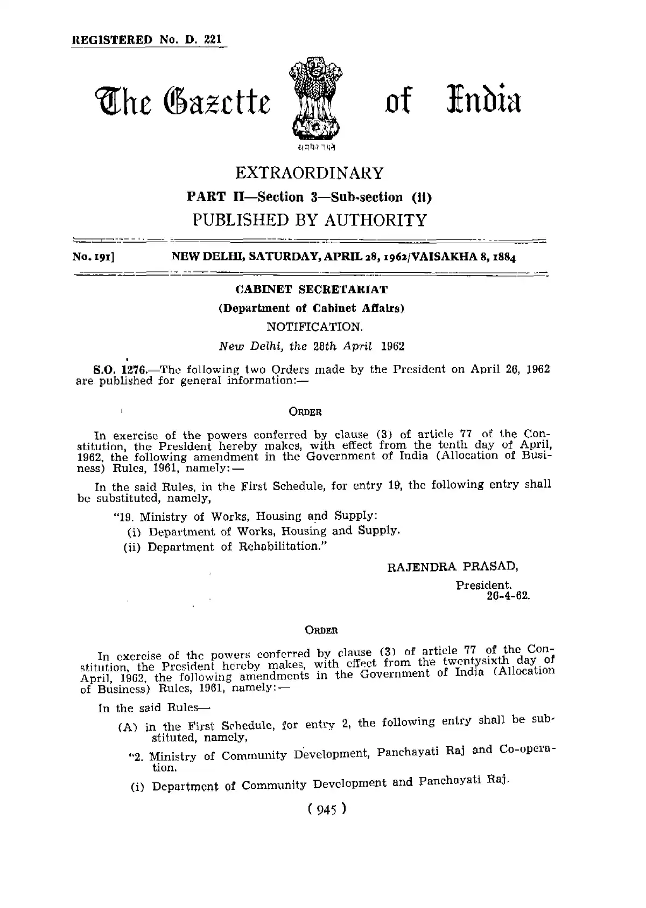
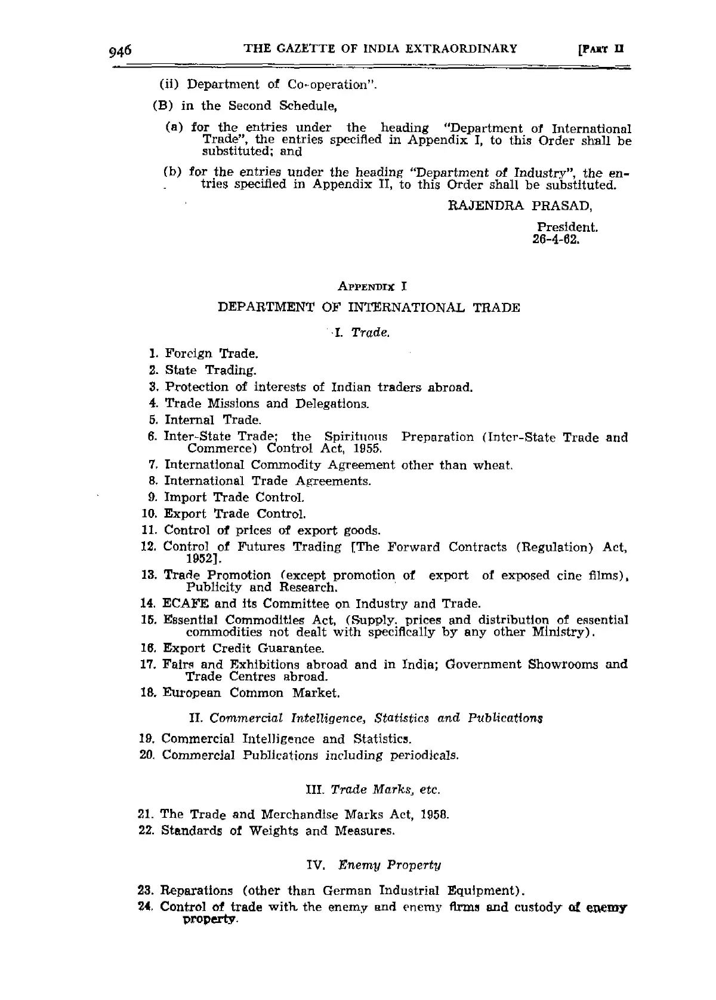
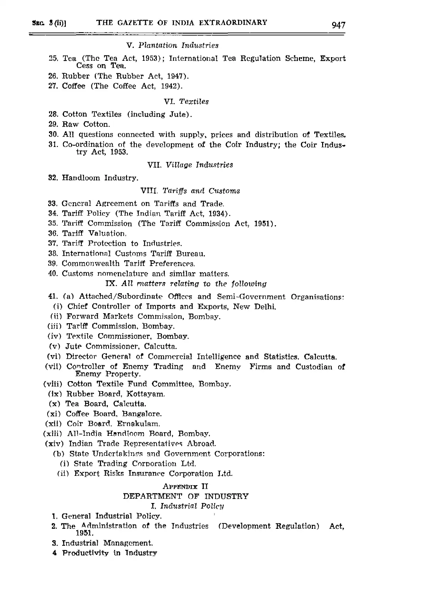
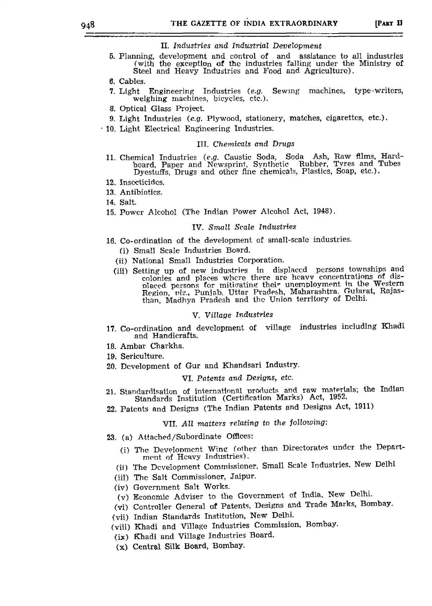
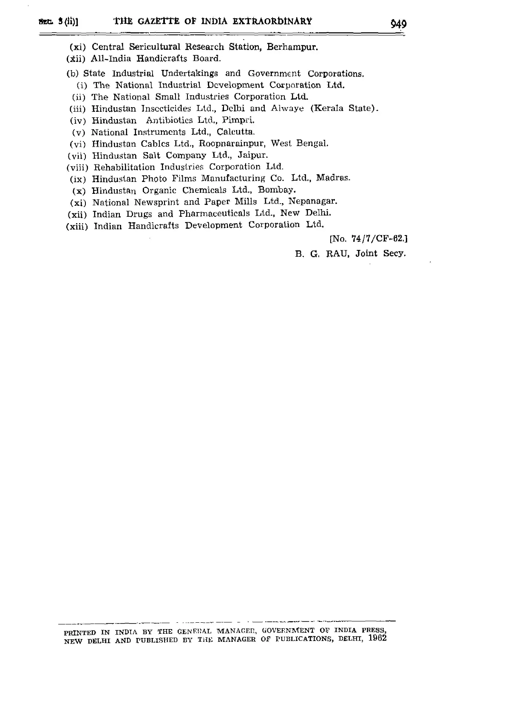

Amendment #6 (S.O. 1276, 1962)
4 changes: 2 to the First Schedule, 2 to the Second Schedule. 4 applied
What it did to the ministries
- renamedMinistry of Community Development & Cooperation is renamed Ministry of Community Development, Panchayati Raj and Co-operation change 2 · histories: Community Development and Co-operation
The order, page by page
Page 1 of 6

12Schedule 1 › entry 19
- 19. Ministry of Works, Housing and Supply:
- i. Department of Works, Housing and Supply.
- ii. Department of Rehabilitation.
applied at schedule 1 › ministry 19 in the Rules after #6
read hindi missing
Schedule 1 › entry 2
- 2. Ministry of Community Development, Panchayati Raj and Co-operation.
- i. Department of Community Development and Panchayati Raj. (945) [PART II
- ii. Department of Co-operation
applied at schedule 1 › ministry 2 in the Rules after #6
read hindi missing, read page break
Page 2 of 6

34Schedule 2 › Department of International Trade
- DEPARTMENT OF INTERNATIONAL TRADE
- I. Trade.
- 1. Foreign Trade.
- 2. State Trading.
- 3. Protection of interests of Indian traders abroad.
- 4. Trade Missions and Delegations.
and 62 more
- 5. Internal Trade.
- 6. Inter-State Trade; the Spirituous Preparation (Inter-State Trade and Commerce) Control Act, 1955.
- 7. International Commodity Agreement other than wheat.
- 8. International Trade Agreements.
- 9. Import Trade Control.
- 10. Export Trade Control.
- 11. Control of prices of export goods.
- 12. Control of Futures Trading [The Forward Contracts (Regulation) Act 1952].
- 13. Trade Promotion (except promotion of export of exposed cine films) Publicity and Research.
- 14. ECAFE and its Committee on Industry and Trade.
- 15. Essential Commodities Act, (Supply, prices and distribution of essential commodities not dealt with specifically by any other Ministry).
- 16. Export Credit Guarantee.
- 17. Fairs and Exhibitions abroad and in India; Government Showrooms and Trade Centres abroad.
- 18. European Common Market.
- II. Commercial Intelligence, Statistics and Publications
- 19. Commercial Intelligence and Statistics.
- 20. Commercial Publications including periodicals.
- III. Trade Marks, etc.
- 21. The Trade and Merchandise Marks Act, 1958.
- 22. Standards of Weights and Measures.
- IV. Enemy Property
- 23. Reparations (other than German Industrial Equipment).
- 24. Control of trade with the enemy and enemy firms and custody of enemy property. SEC 3 (ii)]
- V. Plantation Industries
- 25. Tea (The Tea Act, 1953); International Tea Regulation Scheme, Export Cess on Tea.
- 26. Rubber (The Rubber Act, 1947).
- 27. Coffee (The Coffee Act, 1942).
- VI. Textiles
- 28. Cotton Textiles (including Jute).
- 29. Raw Cotton.
- 30. All questions connected with supply, prices and distribution of Textiles.
- 31. Co-ordination of the development of the Coir Industry; the Coir Industry Act, 1953.
- VII. Village Industries
- 32. Handloom Industry.
- VIII. Tariffs and Customs
- 33. General Agreement on Tariffs and Trade.
- 34. Tariff Policy (The Indian Tariff Act, 1934).
- 35. Tariff Commission (The Tariff Commission Act, 1951)
- 36. Tariff Valuation.
- 37. Tariff Protection to Industries.
- 38. International Customs Tariff Bureau
- 39. Commonwealth Tariff Preferences
- 40. Customs nomenclature and similar matters.
- IX. All matters relating to the following
- 41.
- a. Attached/Subordinate Offices and Semi-Government Organisations:
- i. Chief Controller of Imports and Exports, New Delhi.
- ii. Forward Markets Commission, Bombay.
- iii. Tariff Commission, Bombay
- iv. Textile Commissioner, Bombay.
- v. Jute Commissioner, Calcutta.
- vi. Director General of Commercial Intelligence and Statistics, Calcutta.
- vi. Controller of Enemy Trading and Enemy Firms and Custodian of Enemy Property. (viii) Cotton Textile Fund Committee, Bombay
- ix. Rubber Board, Kottayam.
- x. Tea Board, Calcutta.
- xi. Coffee Board, Bangalore.
- xi. Coir Board. Ernakulam.
- xii. All-India Handloom Board, Bombay.
- xiv. Indian Trade Representatives Abroad.
- b. State Undertakings and Government Corporations:
- i. State Trading Corporation Ltd.
- ii. Export Risks Insurance Corporation Ltd.
applied at schedule 2 › ministry MINISTRY OF COMMERCE & INDUSTRY › department A in the Rules after #6
read hindi missing, read page break
Schedule 2 › Department of Industry
- APPENDIX II DEPARTMENT OF INDUSTRY
- I. Industrial Policy
- 1. General Industrial Policy.
- 2. The Administration of the Industries (Development Regulation) Act
- 1951.
- 3. Industrial Management.
and 52 more
- 4. Productivity in Industry The Gazette of india exTRAORDINARY [PART 1]
- II. Industries and Industrial Development
- 5. Planning, development and control of and assistance to all industries (with the exception of the industries falling under the Ministry of Steel and Heavy Industries and Food and Agriculture).
- 6. Cables.
- 7. Light Engineering Industries (e.g. Sewing machines, type-writers weighing machines, bicycles, etc.).
- 8. Optical Glass Project.
- 9. Light Industries (e.g. Plywood, stationery, matches, cigarettes, etc.). · 10. Light Electrical Engineering Industries.
- III. Chemicals and Drugs
- 11. Chemical Industries (e.g. Caustic Soda, Soda Ash, Raw films, Hardboard, Paper and Newsprint, Synthetic Rubber, Tyres and Tubes Dyestuffs, Drugs and other fine chemicals, Plastics, Soap, etc.).
- 12. Insecticides.
- 13. Antibiotics.
- 14. Salt.
- 15. Power Alcohol (The Indian Power Alcohol Act, 1948).
- IV. Small Scale Industries
- 16. Co-ordination of the development of small-scale industries.
- i. Small Scale Industries Board.
- i. National Small Industries Corporation.
- iii. Setting up of new industries in displaced persons townships and colonies and places where there are heavy concentrations of displaced persons for mitigating their unemployment in the Western Region, viz., Punjab, Uttar Pradesh, Maharashtra. Gujarat, Rajasthan, Madhya Pradesh and the Union…
- V. Village Industries
- 17. Co-ordination and development of village industries including Khadi and Handicrafts.
- 18. Ambar Charkha.
- 19. Sericulture.
- 20. Development of Gur and Khandsari Industry.
- VI. Patents and Designs, etc.
- 21. Standardisation of international products and raw materials; the Indian Standards Institution (Certification Marks) Act, 1952.
- 22. Patents and Designs (The Indian Patents and Designs Act, 1911)
- VII. All matters relating to the following:
- 23.
- a. Attached/Subordinate Offices:
- i. The Development Wing (other than Directorates under the Department of Heavy Industries).
- ii. The Development Commissioner, Small Scale Industries, New Delhi
- ii. The Salt Commissioner, Jaipur.
- iv. Government Salt Works.
- v. Economic Adviser to the Government of India, New Delhi.
- vi. Controller General of Patents, Designs and Trade Marks, Bombay.
- vii. Indian Standards Institution, New Delhi (viii) Khadi and Village Industries Commission, Bombay.
- ix. Khadi and Village Industries Board.
- x. Central Silk Board, Bombay. SEL 3 (li)]
- xi. Central Sericultural Research Station, Berhampur.
- xii. All-India Handicrafts Board.
- b. State Industrial Undertakings and Government Corporations.
- i. The National Industrial Development Corporation Ltd.
- ii. The National Small Industries Corporation Ltd.
- iii. Hindustan Insecticides Ltd., Delhi and Alwaye (Kerala State).
- iv. Hindustan Antibiotics Ltd., Pimpri.
- v. National Instruments Ltd., Calcutta.
- vi. Hindustan Cables Ltd., Roopnarainpur, West Bengal.
- vi. Hindustan Salt Company Ltd., Jaipur. (viii) Rehabilitation Industries Corporation Ltd.
- ix. Hindustan Photo Films Manufacturing Co. Ltd., Madras.
- x. Hindustan Organic Chemicals Ltd., Bombay.
- xi. National Newsprint and Paper Mills Ltd., Nepanagar.
- xii. Indian Drugs and Pharmaceuticals Ltd., New Delhi. (xiii) Indian Handicrafts Development Corporation Ltd.
applied at schedule 2 › ministry MINISTRY OF COMMERCE & INDUSTRY › department B in the Rules after #6
read hindi missing, read page break
Page 3 of 6

Page 4 of 6

Page 5 of 6

Page 6 of 6
How this document was read
Changes placed by an inference rule
| Change | Rule | Status | What |
|---|---|---|---|
| 3 | number_kept | accepted | change 3: schedule 2 › ministry MINISTRY OF COMMERCE & INDUSTRY › department Department of International Trade keeps its number A, the heading put for it quoted without one |
From the Government of India (Allocation of Business) Rules, 1961 and their amendments, as published by the Cabinet Secretariat (cabsec.gov.in), read by orgpedia. The readings of the older scanned gazettes have known gaps.